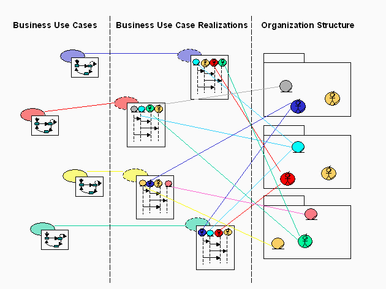

| Рекомендация: Business Analysis Model |
 |
|
| Связанные элементы |
|---|
ExplanationA Business Analysis Model defines the realization of the business use cases, from the internal viewpoint of the business systems and business workers. The model defines how people and systems working in the business, and the things they handle and use (business entities), must relate to one another, both statically and dynamically, to produce the desired results. It places emphasis on roles performed in the business areas, and their active responsibilities. The model will show all collaborations needed to realize all business use cases, and all classes from which objects will be instantiated to bind (fulfill) those roles. The key elements of the Business Analysis Model are:
The Business Analysis Model brings the notions of structure and behavior together. Business Use-Case Realizations map the descriptions of process (Business Use Cases), which specify desired behavior, to structural elements within the organization (see the figure that appears after the bullets). The following are some characteristics of the Business Analysis Model:
 Naming ConventionsIn general, Business Systems, Business Workers, Business Entities, and Business Events should have short, descriptive names that are unique and are not similar to other names. Sometimes it may be necessary to use more than one word to describe the purpose of the model element and ensure that it is unique and recognizable, especially when considering a broader context (which may become important in the future). A Business System provides a collection of related responsibilities with a specific purpose, and should be named in a way that reflects this purpose. It may be tempting to use generic names or catch phrases for names (such as Client Services), but make sure that the term is really applicable and descriptive. Generally, a gerund form of a verb is useful (such as Shipping, Invoicing, or Selling) as is a reference to the purpose of the Business System (such as Customer Management or Target Acquisition). See Guideline: Business System for more information. Business Workers should be named in a way that expresses their responsibilities. Do not describe the function (in case of a human business worker), but the role played by the business worker in the use-case realization. This role is reflected by the purpose with which the business worker is involved in the business use-case realization. See Guideline: Business Worker for more information. For example, imagine a process in which data is typed into a system by one business worker and held until a second business worker has verified or approved the data before processing (such as in loan applications at a bank). The business worker who inputs the data could be named Data Typist or Data Entry Clerk, whereas the second business worker could be named Verifier, Authorizer, or Releaser. Data Entry Clerk has the disadvantage of sounding human, while the last three may have to be further qualified at some stage (for example, Mortgage Authorizer if the bank is also going to start brokering insurance policies). Business Entities should be named in a way that reflects the information they represent. Business entities must always be defined in the Business Glossary, since there is usually much difference of opinion regarding definitions and relationships. Do not include the state or properties of the Business Entity in its name. Business Entity names should be singular, not plural. See Guideline: Business Entity for more information. Business Events should be named in a way that indicates the occurrence or state changed that it represents. Do not describe the trigger of the event or the reaction to the event in the name. The specification of the event is independent of its triggers. See Guideline: Business Event for more information. Business Objects in Relation to Business Use CasesAs you study the business workers and business entities that participate in your business' different use cases, you may find several that are so similar that they are really one class. Even when different business use cases do not have identical demands, the classes may be similar enough to be considered one and the same phenomenon. If this is the case, merge the similar classes into one. This results in a business worker or business entity that has sufficient relationships, attributes, and operations to meet all the demands of the different business use cases. The diagram at the end of the section titled "Explanation" (above) shows how business workers and business entities participate in different business use-case realizations. Several business use cases may, therefore, have quite different demands on one and the same class. In the case of business workers, if you have employees capable of acting in the described set of roles, you will also have flexible employees who can work in several positions. This gives you a more flexible business. The Business Analysis Model and Information SystemsIn the Business Analysis Model, Business Workers represent the roles that the active units of the business will play, whereas Business Entities represent those things that the active units will handle. Using a Business Analysis Model, you define how the Business Workers (and at a higher level, the Business Systems) need to interact to produce the desired results for the business actor. We said above that a Business Worker may represent an abstraction of a software system; when you move out of the business modeling context, you will use a System Use-Case Model and Design Model to specify that software system. Business modeling and software modeling address different problem domains at two different abstraction levels. Therefore, as a general rule you should respect this difference, and not allow software modeling details to intrude into the business models, but focus on the business purpose of the Business Workers. When you examine the interactions and characteristics of business workers in the 'as-is' model (particularly those roles played by human workers), the occurrence and consumption of business events, and the operations performed on business entities, certain relationship heuristics between the business modeling and the system modeling contexts may be useful, as you look for automation opportunities. Links, associations and attributes in the business model may suggest possible automation:
These relationships are useful when identifying requirements for the information systems to support the business. See the section on automated business workers in Guideline: Going from Business Models to Systems. Information Systems as Business ActorsSometimes the employees of one business contact the employees of another business through the use of an information system in the first business. From the perspective of the modeled business, that information system is a business actor. Example:A software developer tries to understand a problem in the product for which he is responsible. To understand if the problem originates from the programming tool he is using, he contacts the supplier's World Wide Web server and studies the list of known problems in the current release of the programming tool. In this way, the business worker Software Developer interacts with the business actor Supplier WWW Server. Information Systems Explicitly in the Business Analysis ModelAs you model manipulations of business entities by business workers, it is evident that many of the operations on the business entities would be performed with the assistance of some tool - perhaps computer-based. Whether you choose to model this explicitly as an information or other system (and therefore represent it by a business worker) depends on its significance in the business. For example, you would probably not model a simple desktop system that has word processing and spreadsheet capabilities as a business worker in its own right. On the other hand, when you encounter an information system in a business that is directly used by customers, and this interaction forms a major part of the business services, it might be so commercially important that you want to show it in the Business Analysis Model. Telephone banking services are good examples of this type of information system. In this case you could proceed as follows:
Characteristics of a Good Business Analysis ModelTaken together, the business systems, business workers, business entities, and business events perform all tasks described in the business use cases - no more and no less. The Business Analysis Model gives a good, comprehensive picture of the organization at an appropriate level of abstraction. Transition to Business Design ModelThe Business Design Model is the evolution of the Business Analysis Model with choices (and associated rationale) for the realization, and perhaps refactoring, of Business Workers in humans, software or systems (themselves composed of some or all of humans, software and hardware). The Business Design Model does not decompose these further - that is the task of subsequent system or software development efforts. |
© Copyright IBM Corp. 1987, 2006. Все права защищены.. |